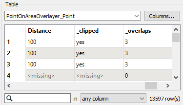
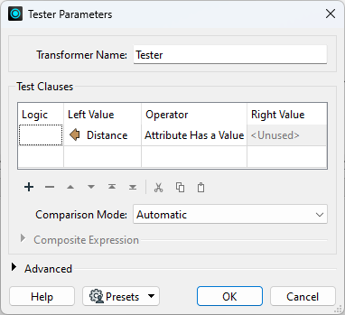

Looping is available via custom transformers and the PythonCaller, but you do not need to use looping in FME workspaces in most cases.
After completing this lesson, you’ll be able to:
In this exercise, you will calculate the tsunami flood risk for all addresses in your city. You will model risk as a combination of closeness to the shoreline and elevation above sea level. Flood risk is on a scale from one to five (1-5), and you calculate it using this table:
| Elevation (meters above sea level) | ||||
| 0-10m | 10-25m | 25-60m | ||
| Distance from Shoreline (meters) | 100m | 1 | 2 | 3 |
| 200m | 2 | 3 | 4 | |
| 300m | 3 | 4 | 5 | |
First, you have spatial elevation data (raster DEM), address points, land boundary polygon, and the coastline. You must use spatial analysis techniques on your starting datasets to calculate the flood risk. You have several steps in mind:
Let's get started!
Open the starting workspace in FME Workbench 2022.0. This workspace contains the datasets you will be working with: a Digital Elevation Model (DEM) file for the elevation, an Esri ArcGIS Geodatabase for the addresses, an Esri shapefile of the land boundary, and a GML for the coastline. Note that the DEM is an example of raster data, while the other datasets are vector data.
Turn on feature caching and run the workspace. Inspect the results of each dataset to get familiar with your data. You should notice that each separate dataset contains a piece of information we need for our final result. We'll use spatial filtering and joining to combine them into the desired shape.
We want to create three buffer zones, one for each distance band (100, 200, and 300 m). We could use three separate Bufferers, but there is a trick for improving your workflows in FME when you need to conduct multiple steps. Often users want to use a loop as you would in a programming language. However, you can accomplish most of tasks in FME without using loops. One way is to use what we call the Cloner-Loop technique.
Add a Cloner connected to the Coastline feature type. Set Number of Copies to 3.

The Cloner will create three copies of our coastline dataset, giving us three features instead of one. We will now give each feature a different value for the buffer, creating three buffer zones of different sizes without looping.
We will store the buffer distances in an attribute. Add an ExpressionEvaluator connected to the Cloner. Set Result to Distance. For the expression, enter (@Value(_copynum) + 1) * 100.

Click OK. This expression will add one to the copy number from the Cloner (as counts from 0-2 instead of 1-3) and then multiply it by 100. The result is values of 100, 200, and 300, the buffer lengths we want. You can confirm this by clicking the ExpressionEvaluator, clicking Run To This, and inspecting the Distance attribute on the ExpressionEvaluator:Output cache.

Add a Bufferer after the ExpressionEvaluator. Set Buffer Distance to the Distance attribute.

Click OK and use Run To This on the Bufferer. Inspect the cache to confirm you have three buffer zones.

Next, we must adjust our buffer zones to only measure inland. Add a Clipper after the Bufferer. Connect the VancouverLandBoundary feature type to the Clipper port and the Buffered port to the Clippee port.

Run the Clipper and inspect the Clipper:Inside cache. The buffer zones from this port only cover the land area:

We are ready to overlay the address points on the coastline buffer zones. Through this spatial join, we can add an attribute to our points that records which coastal distance band they overlap. Add a PointOnAreaOverlayer and connect the Clipper:Inside port to the Area port and the Postal Addresses feature type to the Points port.

Now double-click the PointOnAreaOverlayer to edit its parameters. Expand the Attribute Accumulation section and enable the Merge Attributes parameter. With this parameter enabled, the PointOnAreaOverlayer adds attributes from the areas to the points.
Also, check the Generate List On Output 'Point' parameter. Set 'Point' List Name to DistanceList and choose Distance as the Selected Attribute.

Click OK.
Now we can use a few transformers to extract the closest distance from the new PointList attribute. First, let's confirm the structure of our list attribute. Inspect a feature in the PointOnAreaOverlayer:Point port near the coastline. You should see Distance has been assigned from the attribute merge, but you should also see there is now a DistanceList list attribute. This will contain one to three entries depending on the distance from the coastline. You can inspect the attribute in the Feature Information window:

We need to find the lowest value in DistanceList.Distance and set it to Distance. We can do that using a ListSorter and ListIndexer.
Add a ListSorter and connect it to the PointOnAreaOverlayer:Point port. Set List Attribute to DistanceList{}.Distance, Sort Type to Numeric, and Sort Order to Ascending. This will sort the list so the lowest entry is element 0.

Click OK.
Add a ListIndexer and connect it to the ListSorter:Output port. Set List Attribute to DistanceList{} and List Index to Copy to 0. This will set the value of Distance to the lowest distance band of the feature.

Click OK.
Use Run to This on the ListIndexer. Inspect the results; you can see the Distance attribute on each point. Points not within 300 m of the shore will have <missing> values for Distance; let's fix that.

Let's remove the points that do not have a Distance value, leaving us with only the points in the buffered area. Add a Tester after the ListIndexer and configure it like this:

Run your workspace and inspect the Tester:Passed cache. You should only have points within the buffered zone now.
This screenshot shows how the addresses fall within (and are assigned) zones denoting their distance from the shoreline.

The next step is to add an elevation attribute to each point using a PointOnRasterValueExtractor. This transformer is similar to the PointOnAreaOverlayer, but it takes raster data as input instead of vector areas. Add a PointOnRasterValueExtractor to the right side of your canvas. Connect the Reprojector:Reprojected port to the Raster input port and the Tester:Passed port to the Point input port. This section of your workspace should look like this:

This transformer will output an elevation value on our address points. However, because raster data can have multiple bands, you will not immediately see an Elevation attribute. A list called _band stores the elevation value. We can turn this list value into an exposed attribute with an AttributeRenamer. Add one connected to the PointOnRasterValueExtractor and open its parameters. For Input Attribute enter _band{0}.value, and for Output Attribute, enter Elevation.

Click OK and then Run To This on the AttributeRenamer and inspect to confirm you now have an Elevation attribute.
Now that our points have both a distance and an elevation value, we can assign them to a flood risk zone, 1-5. We'll do this according to the table at the start of the exercise.
The transformer we will use is an AttributeManager. Because this lesson's focus is spatial analysis, not attribute manipulation, we've provided this transformer in the starting workspace and already configured it using Conditional Values. Connect the AttributeManager transformer to the AttributeRenamer.

Then, open the AttributeManager parameters. Find the FloodRisk attribute:

We've already filled out the dialog with a series of Test Conditions, viewable by clicking the 6 Possible Values > ellipsis [. . .] button. These tests will provide a value to FloodRisk 1-5 based on the combination of Zone and Elevation. These Conditional Values translate the table above into a form FME can understand.

You can click Cancel to exit these dialogs as they are already configured and ready to use.
Inspecting cached data doesn't allow you to quickly inspect your data grouped by an attribute unless you use an Inspector transformer. So place a single Inspector transformer and connect the AttributeManager output to it.
Open the Inspector parameters dialog, and under Group By, select the newly created attribute called FloodRisk.

Save and run the workspace. You should see each address colored to match its flood risk. You can adjust the feature symbology to produce a clearer result, like so:

You can also turn off zones one at a time to see which addresses are the most or least at risk.